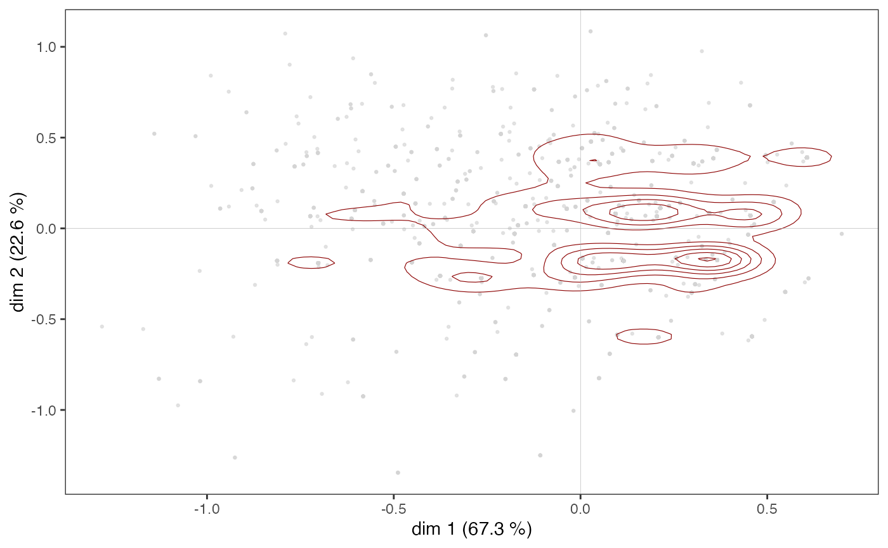
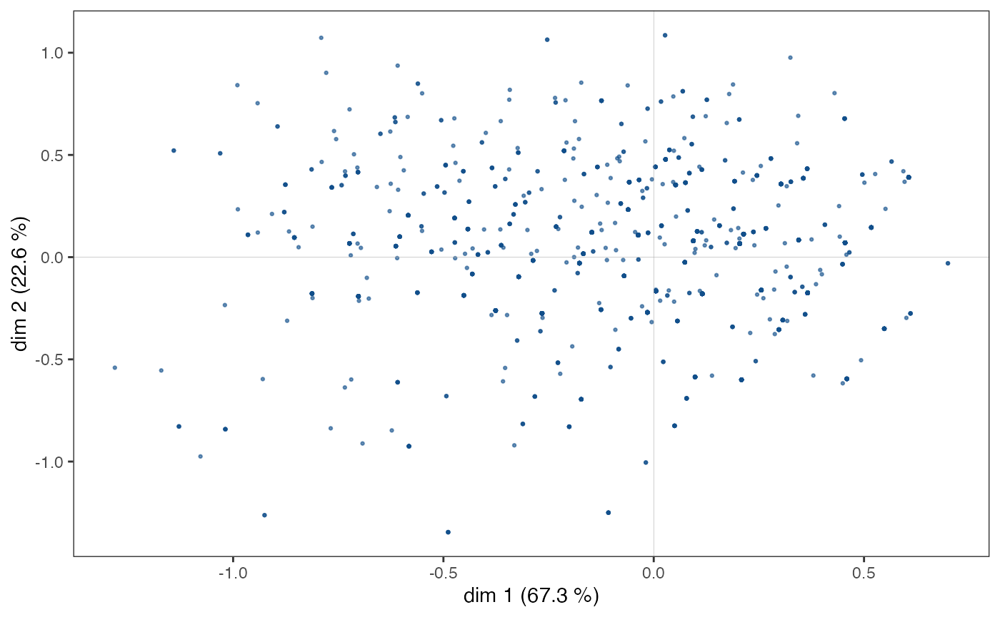
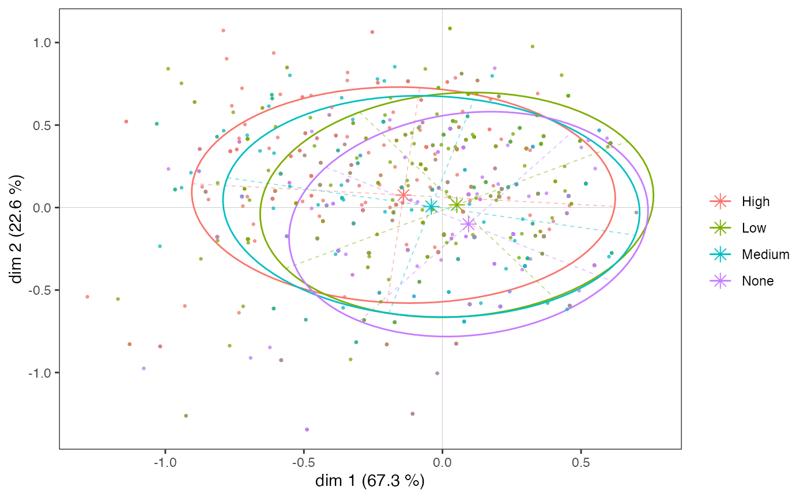
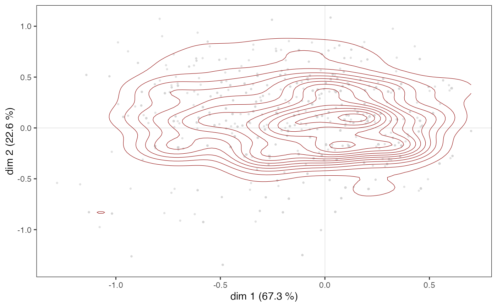
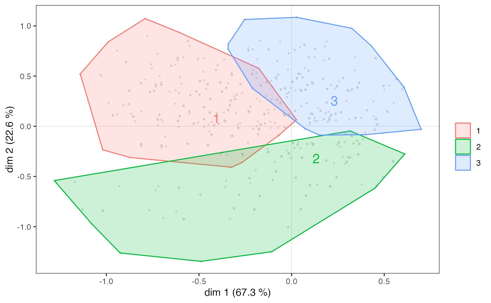

L’analyse géométrique des données avec GDAtools
Nicolas Robette
2022-06-03
Source:vignettes/french/Tutoriel_AGD.Rmd
Tutoriel_AGD.Rmd
Ce tutoriel présente l’utilisation du package GDAtools pour l’analyse géométrique des données. Pour des approfondissements sur les procédures statistiques elles-mêmes, il est recommandé de se référer aux ouvrages d’Henry Rouanet et Brigitte Le Roux :
Le Roux B. and Rouanet H., 2004, Geometric Data Analysis: From Correspondence Analysis to Stuctured Data Analysis, Kluwer Academic Publishers, Dordrecht.
Le Roux B. and Rouanet H., 2010, Multiple Correspondence Analysis, SAGE, Series: Quantitative Applications in the Social Sciences, Volume 163, CA:Thousand Oaks.
Introduction
Pour cet exemple d’Analyse des Correspondances Multiples, nous allons utiliser l’un des jeux de données fournis avec le package. Il s’agit d’informations sur les goûts et les pratiques culturelles de 2000 individus : écoute de genres musicaux (variété française, rap, rock, jazz et classique) et goût pour des genres de films (comédie, film policier, animation, science-fiction, film d’amour, comédie musicale). Ces 11 variables serviront de variables “actives” dans l’ACM et sont complétées par 3 variables “supplémentaires” : le sexe, l’âge et le niveau d’éducation.
'data.frame': 2000 obs. of 14 variables:
$ FrenchPop: Factor w/ 3 levels "No","Yes","NA": 2 1 2 1 2 1 1 1 1 2 ...
$ Rap : Factor w/ 3 levels "No","Yes","NA": 1 1 1 1 1 1 1 1 1 1 ...
$ Rock : Factor w/ 3 levels "No","Yes","NA": 1 1 2 1 1 2 1 1 2 1 ...
$ Jazz : Factor w/ 3 levels "No","Yes","NA": 1 2 1 1 1 1 1 1 1 1 ...
$ Classical: Factor w/ 3 levels "No","Yes","NA": 1 2 1 2 1 1 1 1 1 1 ...
$ Comedy : Factor w/ 3 levels "No","Yes","NA": 1 2 1 1 1 1 2 2 2 2 ...
$ Crime : Factor w/ 3 levels "No","Yes","NA": 1 1 1 1 2 1 1 1 1 1 ...
$ Animation: Factor w/ 3 levels "No","Yes","NA": 1 1 1 1 1 1 1 1 1 1 ...
$ SciFi : Factor w/ 3 levels "No","Yes","NA": 2 1 1 1 1 2 1 1 1 1 ...
$ Love : Factor w/ 3 levels "No","Yes","NA": 1 1 2 1 1 1 1 1 1 1 ...
$ Musical : Factor w/ 3 levels "No","Yes","NA": 1 1 1 1 1 1 1 1 1 1 ...
$ Gender : Factor w/ 2 levels "Men","Women": 1 1 2 1 2 2 2 2 1 1 ...
$ Age : Factor w/ 3 levels "15-24","25-49",..: 2 3 2 3 2 2 2 2 1 3 ...
$ Educ : Factor w/ 4 levels "None","Low","Medium",..: 3 4 3 4 2 1 3 2 2 2 ...
Les variables actives ont toutes une modalité “non-réponse” (“NA”), qui concerne quelques individus.
FrenchPop Rap Rock Jazz Classical Comedy Crime Animation
10 9 10 15 5 3 15 4
SciFi Love Musical
12 7 11
L’ACM dite “spécifique” permet de neutraliser ces modalités dans la construction de l’espace factoriel, tout en conservant l’ensemble des individus. On commence par repérer le rang des modalités que l’on souhaite neutraliser.
getindexcat(Taste[,1:11]) [1] "FrenchPop.No" "FrenchPop.Yes" "FrenchPop.NA" "Rap.No"
[5] "Rap.Yes" "Rap.NA" "Rock.No" "Rock.Yes"
[9] "Rock.NA" "Jazz.No" "Jazz.Yes" "Jazz.NA"
[13] "Classical.No" "Classical.Yes" "Classical.NA" "Comedy.No"
[17] "Comedy.Yes" "Comedy.NA" "Crime.No" "Crime.Yes"
[21] "Crime.NA" "Animation.No" "Animation.Yes" "Animation.NA"
[25] "SciFi.No" "SciFi.Yes" "SciFi.NA" "Love.No"
[29] "Love.Yes" "Love.NA" "Musical.No" "Musical.Yes"
[33] "Musical.NA"
Le vecteur de ces rangs est ensuite donné comme argument dans la fonction speMCA.
Les nuages
Les taux d’inertie corrigés de Benzécri permettent de se faire une idée de la part d’information représentée par chacun des axes.
modif.rate(mca)$modif mrate cum.mrate
1 67.30532896 67.30533
2 22.64536000 89.95069
3 7.17043134 97.12112
4 2.26387669 99.38500
5 0.59232858 99.97733
6 0.02267443 100.00000On voit ici que les deux premiers axes capturent l’essentiel de l’information (près de 90 %). On va donc dans la suite se concentrer sur le plan formé par les axes 1 et 2.
Nuage des individus
Le nuage des individus ne présente pas de forme particulière (triangle, fer à cheval…), les points semblent répartis dans l’ensemble du plan.
ggcloud_indiv(mca)
Toutefois, dans certains cas, des points peuvent se superposer et la structure du nuage des individus n’est qu’imparfaitement rendue par un nuage de points. Il est alors possible de compléter le premier graphique par une représentation de la densité de points dans le plan. La fonction ggcloud_indiv permet de le faire à l’aide de contours ou de surfaces hexagonales.
ggcloud_indiv(mca, col="lightgray", density="contour")
ggcloud_indiv(mca, density="hex", hex.bin=10)
Quelle que soit la représentation de la densité utilisée, on observe que les points semblent être plus concentrés dans une zone située immédiatement à droite de l’axe vertical.
Nuage des variables
Sur le nuage des variables,
l’écoute de jazz et de musique classique et le goût des comédies musicales semblent s’opposer à l’écoute de rap et au goût pour les comédies sur l’axe 1 ;
le goût pour l’animation et la science-fiction à celui pour les films d’amour et les comédies musicales sur l’axe 2.
ggcloud_variables(mca, shapes=FALSE, legend="none")
Toutefois, l’interprétation du plan factoriel, pour être robuste, ne peut s’arrêter à un examen visuel du nuage des variables. Celui-ci doit être complété par l’analyse attentive d’indicateurs statistiques, en particulier des contributions des modalités à la construction des axes.
Aides à l’interprétation
La plupart des aides à l’interprétation et autres informations utiles sont présentes dans l’objet créé par speMCA. Le package propose plusieurs fonctions pour extraire simplement ces informations.
-
contribprésente les contributions des variables et des modalités de ces variables à la contruction de chacun des axes et à celle du nuage. -
dimcontribextrait les contribution des individus et des modalités de variables à la construction d’un axe en particulier. -
dimdescridentifie les variables et les modalités de variables les plus statistiquement associées aux différents axes. Les mesures d’association utilisées sont l’eta² pour les variables et les coefficients de corrélation pour les modalités.
La fonction tabcontrib permet, pour un axe donné, de synthétiser les principales contributions (seules les contributions supérieures à la moyenne sont présentées).
tabcontrib(mca, dim=1)| var | moda | ctr1 | ctr2 | weight | ctrtot | cumctrtot |
|---|---|---|---|---|---|---|
| Classical | Yes | -23.08 | 552 | 31.88 | 31.88 | |
| No | 8.8 | 1443 | ||||
| Jazz | Yes | -25.49 | 364 | 31.15 | 63.03 | |
| No | 5.66 | 1621 | ||||
| Comedy | No | -7.22 | 1141 | 16.88 | 79.91 | |
| Yes | 9.66 | 856 |
Les variables d’écoute de musique classique et de jazz contribuent à elles seules pour plus de 60 % à la construction de l’axe 1. L’écoute de classique et de jazz s’opposent donc à leur non-écoute, et secondairement au goût pour les comédies.
tabcontrib(mca, dim=2)| var | moda | ctr1 | ctr2 | weight | ctrtot | cumctrtot |
|---|---|---|---|---|---|---|
| Rock | No | -4.78 | 1455 | 17.77 | 17.77 | |
| Yes | 12.99 | 535 | ||||
| Love | Yes | -17.24 | 225 | 17.24 | 35.01 | |
| FrenchPop | Yes | -5.69 | 1249 | 15.38 | 50.39 | |
| No | 9.69 | 741 | ||||
| Musical | Yes | -14.33 | 66 | 14.33 | 64.72 | |
| SciFi | Yes | 11.49 | 143 | 11.49 | 76.21 | |
| Rap | Yes | 11.05 | 261 | 11.05 | 87.26 |
Sur l’axe 2, l’écoute de rock et de rap et le goût pour les films de science-fiction s’opposent au goût pour le films d’amour et les comédies musicale et l’écoute de variété française.
Les facteurs structurants
Les variables supplémentaires
On peut aller plus loin en étudiant la relation entre l’espace factoriel et les variables supplémentaires, en l’occurrence le sexe, l’âge et le niveau d’éducation. Une première étape consiste à projeter les variables supplémentaires sur le nuage des variables.
p <- ggcloud_variables(mca, shapes=FALSE, col="lightgray")
p <- ggadd_supvar(p, mca, Taste$Age, col="dodgerblue3", shape=NULL)
p <- ggadd_supvar(p, mca, Taste$Educ, col="tomato", shape=NULL)
ggadd_supvar(p, mca, Taste$Gender, col="seagreen", shape=NULL)
Le niveau d’éducation semble avant tout associé à l’axe 1, les plus diplômés étant du côté de l’écoute de jazz et de classique. Le sexe ne semble lié qu’à l’axe 2, avec les femmes dans le bas du plan et les hommes en haut. Quant à l’âge, il est associé aux deux axes : les individus se déplacent du quadrant nord-est au quadrant sud-ouest à mesure que leur âge augmente.
On peut confirmer statistiquement ces premières observations en mesurant le degré d’association entre les variables supplémentaires et les axes à l’aide de l’indicateur eta².
dim.1 dim.2
Gender 0.0 6.0
Age 3.8 14.2
Educ 5.9 3.3Le niveau d’éducation est la variable supplémentaire la plus associée à l’axe 1 : il “explique” 5,9 % de la variance des coordonnées individuelles sur cet axe. L’âge est également associé au premier axe, mais de manière moins marquée, et le sexe pas du tout.
Sur l’axe 2, l’âge est la variable la plus structurante, devant le sexe et le niveau d’éducation. On voit en outre que l’âge est nettement plus lié à l’axe 2 qu’à l’axe 1.
Au niveau des modalités, on peut caractériser l’association d’une modalité de variable supplémentaire avec un axe à partir des coefficients de corrélation.
| categories | mean.y.in.xcat | mean.y.global | sd.y.in.xcat | sd.y.global | cor |
|---|---|---|---|---|---|
| Age.15-24 | 0.156 | 0 | 0.355 | 0.369 | 0.176 |
| Educ.None | 0.094 | 0 | 0.324 | 0.369 | 0.145 |
| Educ.Low | 0.052 | 0 | 0.355 | 0.369 | 0.100 |
| Age.25-49 | 0.006 | 0 | 0.358 | 0.369 | 0.015 |
| Gender.Women | 0.004 | 0 | 0.370 | 0.369 | 0.012 |
| Gender.Men | -0.005 | 0 | 0.368 | 0.369 | -0.012 |
| Educ.Medium | -0.040 | 0 | 0.376 | 0.369 | -0.051 |
| Age.50+ | -0.061 | 0 | 0.369 | 0.369 | -0.142 |
| Educ.High | -0.141 | 0 | 0.382 | 0.369 | -0.213 |
Sur l’axe 1, les non et peu diplômés et les 15-24 ans s’opposent aux plus diplômés et aux 50 ans et plus. Les autres modalités apparaissent peu liées à l’axe (leurs coefficients de corrélation sont proches de 0).
| categories | median.y.in.xcat | median.y.global | mad.y.in.xcat | mad.y.global | cor |
|---|---|---|---|---|---|
| Age.15-24 | 0 | 0 | 0 | 0 | 0.288 |
| Gender.Men | 0 | 0 | 0 | 0 | 0.245 |
| Age.25-49 | 0 | 0 | 0 | 0 | 0.123 |
| Educ.High | 0 | 0 | 0 | 0 | 0.123 |
| Educ.Low | 0 | 0 | 0 | 0 | 0.034 |
| Educ.Medium | 0 | 0 | 0 | 0 | 0.009 |
| Educ.None | 0 | 0 | 0 | 0 | -0.167 |
| Gender.Women | 0 | 0 | 0 | 0 | -0.245 |
| Age.50+ | 0 | 0 | 0 | 0 | -0.330 |
Sur l’axe 2, les hommes, les moins de 50 ans et les plus diplômés s’opposent aux femmes, aux plus de 50 ans et aux sans diplôme.
Analyse d’une variable supplémentaire
Poursuivons l’analyse en nous concentrant sur une variable supplémentaire, le niveau d’éducation. La fonction varsup fournit les coordonnées des modalités sur les axes, leurs cosinus² (qui donnent la qualité de représentation d’une modalité sur un axe), leurs dispersions sur les axes, les eta² et les tests de typicalité (sur lesquels nous reviendrons dans la partie suivante).
varsup(mca, Taste$Educ)$weight
None Low Medium High
490 678 357 475
$coord
dim.1 dim.2 dim.3 dim.4 dim.5
None 0.254716 -0.293253 -0.191563 0.094510 -0.050520
Low 0.140147 0.046951 0.002259 -0.063613 -0.044181
Medium -0.109057 0.019669 0.054436 0.070183 -0.027962
High -0.380835 0.220714 0.153475 -0.059443 0.136194
$cos2
dim.1 dim.2 dim.3 dim.4 dim.5
None 0.021054 0.027906 0.011908 0.002899 0.000828
Low 0.010073 0.001131 0.000003 0.002075 0.001001
Medium 0.002584 0.000084 0.000644 0.001070 0.000170
High 0.045175 0.015173 0.007337 0.001101 0.005777
$var
dim.1 dim.2 dim.3 dim.4 dim.5
None 0.104915 0.116125 0.115232 0.103800 0.086031
Low 0.125921 0.116092 0.109029 0.087945 0.087735
Medium 0.141298 0.112505 0.097031 0.102449 0.094541
High 0.145983 0.107170 0.091066 0.106049 0.113352
within 0.128284 0.113341 0.104141 0.098718 0.094616
between 0.008061 0.003923 0.001598 0.000524 0.000555
total 0.136345 0.117264 0.105739 0.099242 0.095172
eta2 0.059123 0.033455 0.015115 0.005279 0.005832
$typic
dim.1 dim.2 dim.3 dim.4 dim.5
None 6.487410 -7.468929 -4.878958 2.407110 -1.286704
Low 4.487336 1.503312 0.072336 -2.036827 -1.414633
Medium -2.272883 0.409932 1.134503 1.462690 -0.582753
High -9.502876 5.507427 3.829615 -1.483270 3.398406
$pval
dim.1 dim.2 dim.3 dim.4 dim.5
None 0.000000 0.000000 0.000001 0.016079 0.198197
Low 0.000007 0.132758 0.942334 0.041667 0.157176
Medium 0.023033 0.681856 0.256584 0.143552 0.560059
High 0.000000 0.000000 0.000128 0.138003 0.000678
$cor
dim.1 dim.2 dim.3 dim.4 dim.5
None 0.145 -0.167 -0.109 0.054 -0.029
Low 0.100 0.034 0.002 -0.046 -0.032
Medium -0.051 0.009 0.025 0.033 -0.013
High -0.213 0.123 0.086 -0.033 0.076Graphiquement, on peut représenter le “sous-nuage” de chacune des modalités à l’aide d’une ellipse de concentration, qui est centrée sur le point moyen et englobe 86 % des individus ayant cette modalité.
p <- ggcloud_indiv(mca, col='lightgrey')
ggadd_kellipses(p, mca, Taste$Educ, label=FALSE)
Même si, on l’a vu, les modalités du niveau d’éducation s’ordonnent le long de l’axe 1, les sous-nuages se superposent très largement, car l’association entre la variable et l’axe est modérée.
Observons maintenant plus spécifiquement le sous-nuage des individus les plus diplômés.
ggadd_kellipses(p, mca, Taste$Educ, sel=4, legend="none")
Une ellipse de concentration est utile car elle représente conjointement le point moyen de la modalité et la dispersion du sous-nuage sur les axes. Ici, on voit que bien que le point moyen des individus les plus diplômés soit situé dans le quadrant nord-ouest, une part non négligeable des points du sous-nuage se trouve à droite et/ou en bas du plan.
Les ellipses de concentration ne donnent en revanche qu’une représentation imparfaite de la répartition des points du sous-nuage, du fait de l’éventuelle superposition des points (de manière analogue à ce qu’on a vu pour le nuage des individus) et son centrage sur le point moyen. Il peut dès lors être intéressant de compléter une ellipse de concentration par une représentation de la densité des points du sous-nuage, sous forme de contours ou de surfaces.
ggadd_density(p, mca, var=Taste$Educ, cat="High", density="contour")
ggadd_density(p, mca, var=Taste$Educ, cat="High", density="area", ellipse=TRUE)
On voit ici qu’il semble y avoir une concentration d’individus très diplômés immédiatement à droite de l’axe vertical, dans une zone qui correspond aussi à une concentration de points du nuage des individus (voir plus haut).
Un pas supplémentaire dans l’analyse consiste à neutraliser l’influence de la répartition des points du nuage des individus sur celle du sous-nuage, en se demandant dans quelles parties du plan les plus diplômés sont sur/sous-représentés. Cela est possible à partir d’une carte de chaleur, en mesurant dans chaque “tuile” le coefficient de corrélation entre le fait d’avoir un niveau d’éducation élevé et le fait de se situer dans la tuile plutôt que dans le reste du plan.
ggadd_corr(p, mca, var=Taste$Educ, cat="High", xbins=20, ybins=20)
Les individus les plus diplômés sont sur-représentés dans l’ensemble du quadrant nord-ouest, mais également parmi les plus à l’ouest du quadrant sud-ouest.
A noter que l’on peut aussi représenter les sous-nuages correspondant aux modalités d’une variable supplémentaire à l’aide d’enveloppes convexes. Une enveloppe convexe est le polygone convexe le plus petit parmi ceux qui contiennent un ensemble de points. Dans le contexte de l’AGD, les enveloppes convexes sont une représentation graphique intéressante surtout si les sous-nuages représentés sont relativement peu superposés. C’est par exemple le cas si on réalise une partition des individus dans un plan à l’aide d’une classification automatique. Ici, on applique une classification ascendante hiérarchique aux coordonnées des individus dans le plan 1-2 et on identifie 3 classes.
d <- dist(mca$ind$coord[,c(1,2)])
hca <- hclust(d, "ward.D2")
cluster <- factor(cutree(hca, 3))
ggadd_chulls(p, mca, cluster)
Interaction entre deux variables supplémentaires
On peut également étudier les interactions entre plusieurs variables supplémentaires, par exemple ici entre le sexe et l’âge.
p <- ggcloud_variables(mca, col='lightgrey', shapes=FALSE)
ggadd_interaction(p, mca, Taste$Gender, Taste$Age, col=c("tomato3","dodgerblue3"), legend="none")
Le sexe et l’âge semblent peu interagir dans le plan 1-2. On remarque toutefois que, sur l’axe 1, les écarts entre les plus jeunes et les plus âgés sont plus importants chez les femmes que chez les hommes et que, sur l’axe 2, les jeunes se différencient plus selon le sexe que les plus âgés.
Analyse inductive
Si on souhaite évaluer la généralisabilité des résultats, on peut compléter les analyses descriptives qui précèdent par des procédures d’inférences statistique qui empruntent à l’analyse inductive des données et aux approches combinatoires (pour cette partie plus encore que pour les autres, on renvoie à Le Roux et Rouanet, 2004 & 2010).
Le problème de la typicalité consiste à se demander si un groupe d’individus peut être assimilé à la population de référence ou s’il est atypique. Un test de typicalité calcule une p-value combinatoire, qui définit le “degré de typicalité” du point moyen du groupe d’individus. Une p-value faible est considérée comme statistiquement significative au sens combinatoire et traduit une différence qui n’est probablement pas due au hasard.
dimtypicality(mca, Taste[,c("Gender","Age","Educ")], dim=c(1,2), max.pval=0.05)$dim.1
weight test.stat p.value
Age.15-24 297 7.890052 0.00000
Educ.None 490 6.487410 0.00000
Educ.Low 678 4.487336 0.00001
Educ.Medium 357 -2.272883 0.02303
Age.50+ 854 -6.340738 0.00000
Educ.High 475 -9.502876 0.00000
$dim.2
weight test.stat p.value
Age.15-24 297 12.875430 0
Gender.Men 958 10.972527 0
Age.25-49 849 5.520379 0
Educ.High 475 5.507427 0
Educ.None 490 -7.468929 0
Gender.Women 1042 -10.972527 0
Age.50+ 854 -14.772247 0A un seuil de 5 %, les points moyens des femmes, hommes et âges intermédiaires ne sont pas significativement différents de celui de l’ensemble de la population sur l’axe 1 (autrement dit de 0). Sur l’axe 2, ce sont les points moyens des niveaux d’éducation faibles et moyens qui ne s’écartent pas significativement de l’origine.
On peut étudier les résultats des tests de typicalité d’une variable supplémentaire en particulier à partir de la fonction varsup.
dim.1 dim.2
None 0.000000 0.000000
Low 0.000007 0.132758
Medium 0.023033 0.681856
High 0.000000 0.000000On voit que, sur l’axe 1, toutes les modalités de niveau d’éducation sont significativement différentes de 0 à un seuil de 5 %, elles sont atypiques de l’ensemble du nuage des individus, mais que ce n’est pas le cas des modalités “low” et “medium” sur l’axe 2.
Les ellipses de confiance répondent à la même logique que les tests de typicalité. Avec un seuil de significativité conventionnel de 5 %, l’ellipse de confiance est une zone de confiance à 95 % représentant l’ensemble des points moyens possibles d’une modalité qui ne sont pas significativement différents du point moyen observé.
p <- ggcloud_indiv(mca, col='lightgrey')
ggadd_ellipses(p, mca, Taste$Educ, level=0.05, label=FALSE)
Un test d’homogénéité est une procédure combinatoire qui vise à comparer plusieurs groupes d’individus. La question que l’on se pose est de savoir si, sur un axe donné, les positions de deux groupes sont significativement distinctes (les p-values sont toutes très proches de 0).
ht <- homog.test(mca, Taste$Educ)
ht$dim.1$p.values None Low Medium High
None 1.000000e+00 1.680934e-07 0 0
Low 1.680934e-07 1.000000e+00 0 0
Medium 0.000000e+00 0.000000e+00 1 0
High 0.000000e+00 0.000000e+00 0 1Sur l’axe 1, les points moyens des modalités de niveau d’éducation sont toutes significativement distinctes les unes des autres.
ht$dim.2$p.values None Low Medium High
None 1 0.0000000 0.0000000 0
Low 0 1.0000000 0.2232064 0
Medium 0 0.2232064 1.0000000 0
High 0 0.0000000 0.0000000 1Ce n’est pas le cas sur l’axe 2, où les modalités “low” et “medium” ne se distinguent pas significativement (p-value=0,22).
Class Specific Analysis
La Class Specific Analysis (CSA) est un prolongement de l’ACM qui permet d’étudier un sous-nuage d’individus en prenant conjointement en compte la distribution des variables dans le sous-nuage et dans l’ensemble du nuage. Il s’agit donc de tenir compte du fait que la structure du sous-nuage n’existe pas in abstracto mais en relation avec le nuage dans lequel il s’inscrit.
On illustre ici la CSA à partir du sous-nuage des individus les plus diplômés.
ggcloud_variables(csa, shapes=FALSE, legend="none")
tabcontrib(csa, dim=1)| var | moda | ctr1 | ctr2 | weight | ctrtot | cumctrtot |
|---|---|---|---|---|---|---|
| Jazz | Yes | -41.85 | 145 | 51.08 | 51.08 | |
| No | 9.23 | 326 | ||||
| Classical | Yes | -17.79 | 183 | 24.55 | 75.63 | |
| No | 6.76 | 290 | ||||
| Animation | Yes | 12.43 | 34 | 12.43 | 88.06 |
On voit que, comme dans l’ACM, l’écoute de jazz et de musique classique structurent l’axe 1, mais cette fois beaucoup plus fortement puisque ces deu variables contribuent à elles seules pour 75 % à la construction de l’axe.
tabcontrib(csa, dim=2)| var | moda | ctr1 | ctr2 | weight | ctrtot | cumctrtot |
|---|---|---|---|---|---|---|
| Animation | Yes | -59.05 | 34 | 59.05 | 59.05 | |
| SciFi | Yes | -9.51 | 38 | 9.51 | 68.56 | |
| Rock | Yes | -6.71 | 203 | 6.71 | 75.27 | |
| Jazz | Yes | -5.43 | 145 | 5.43 | 80.7 |
C’est avant tout le goût pour les films d’animation qui contribue à la contruction de l’axe 2, ce qui s’explique sans doute en partie par le faible effectif de cette modalité.
Finalement, le sous-nuage des variables des plus diplômés présente des points communs avec celui de l’ensemble de la population, mais aussi des spécificités très marquées.
On n’ira pas plus loin ici mais précisons que toutes les techniques décrites précédemment peuvent s’appliquer aux résultats d’une CSA.
ACM standardisée
L’ACM standardisée est une tentative d’intégration de l’analyse géométrique des données et de la régression. Son principe consiste à contraindre les axes de l’ACM à être indépendants (i.e. orthogonaux) d’une variable supplémentaire, c’est-à-dire à construire une ACM “toute chose (de cette variable supplémentaire) égale par ailleurs” (Bry et al, 2016). La comparaison de l’espace de l’ACM originelle et de celui de l’ACM standardisée est un moyen d’étudier les effets de structure.
Ici, quand on “contrôle” l’ACM par le niveau d’éducation, qui est associé à l’axe 1, on constate par exemple que les goûts pour les films d’amour et les comédies musicales, plus appréciés des femmes, se déplacent vers la gauche du plan.
stmca <- stMCA(mca, control=list(Taste$Educ))
ggcloud_variables(stmca, shapes=FALSE, legend="none")
Analyse Factorielle Multiple
GDAtools permet également de réaliser des Analyses Factorielles Multiples (AFM) en utilisant des ACM spécifiques ou des Class Specific Analysis.
Ici, un groupe de variables décrit l’écoute de genres musicaux et l’autre le goût pour des genres de films, et l’AFM utilise des ACM spécifiques. On observe que ce sont les variables cinématographiques qui structurent le plan 1-2.
mca1 <- speMCA(Taste[,1:5],excl=c(3,6,9,12,15))
mca2 <- speMCA(Taste[,6:11],excl=c(3,6,9,12,15,18))
mfa <- multiMCA(list(mca1,mca2))
ggcloud_variables(mfa, shapes=FALSE, legend="none")